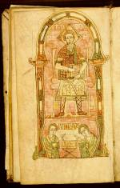

Lex Romana Visigothorum; Formulae Marculfi, voorafgegaan door een excerpt uit Isidorus van Sevilla, Etymologiae. Latijn. Handschrift op perkament, 166 ff., 200 x 115 mm. Bourges(?), einde van de achtste eeuw. -- (BPL 114)
De naam van de geportretteerde keizer op folio 17v is blijkens het opschrift Theodosius, ongetwijfeld de Oostromeinse keizer Theodosius II, die van 408 tot 450 regeerde. Er bestaat geen directe relatie tussen hem en de twee werken in dit handschrift, de Lex Romana Visigothorum en de Formulae Marculfi, noch met het tweede deel van het handschrift, dat thans in Parijs berust. De eerstgenoemde tekst, ook bekend als het Breviarium Alraci, is de belangrijkste rechtsbron uit het westen van het Romeinse rijk op de overgang van de Oudheid naar de middeleeuwen, die uitgroeide tot een van de meest gezaghebbende wetboeken van Noord-Italië en Zuid-Frankrijk. De Formulieren van Marculfus zijn een verzameling koningsoorkonden gevolgd door privaatoorkonden van omstreeks 700.
Theodosius gold echter als de schepper van de in 438 van kracht geworden Codex Theodosianus, die beoogde het toen geldende recht bijeen te brengen. Met enig voorbehoud is de getoonde miniatuur in dit juridische verzamelhandschrift daarom te beschouwen als een auteursportret. Ook in andere handschriften vinden wij dezelfde iconografie voor een auteur, met in de onderpartij, zoals hier, twee figuren in een gebogen houding, die karakteristiek is voor afschrijvers.
Stilistisch sluit de miniatuur door zijn grove, zware penvoering en de gehanteerde ornamentiek aan bij de laat-Merovingische traditie.
Literatuur
- A.W. Byvanck, Les principaux manuscrits à peintures conservés dans les collections publiques du Royaume des Pays-Bas, Paris 1931 ( = Bulletin de la Société francaise de reproduction des manuscrits à peintures. 15), p. 67.
- B. Bischoff, Mittelalterliche Studien. Ausgewählte Aufsätze zur Schriftkunde und Literaturgeschichte. Bd. 3. Stuttgart 1981, p. 17.
| vorige pagina | top pagina |